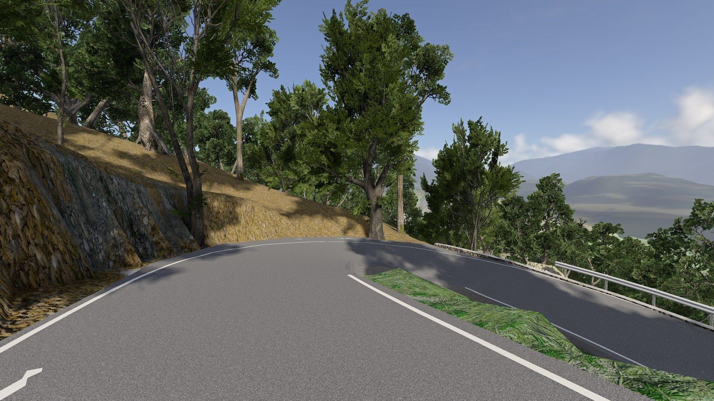
Every road in the Malcantone, at 1:1.
A free map for BeamNG.drive: 52 km² of Canton Ticino between Lake Lugano and the Italian border. Built from Swiss survey data, not modelled by hand.
The Penudria hairpins above Gravesano. In-game screenshot, BeamNG.drive 0.39.
The map
The Malcantone is the hilly corner of Ticino west of Lugano. Villages sit on terraces above the lake, linked by cantonal roads that switch back through chestnut woods. Ponte Tresa and Caslano are on the water; Novaggio, Breno and Arosio are nearly 600 m higher.
The outlined area on the map is the playable area, exactly as the level is built. Inside it every road and trail from the survey is drivable; outside it there is terrain and distant landscape.
- Area
- 52 km²
- Terrain
- 12.3 × 12.3 km, 1.5 m grid (swissALTI3D)
- Roads
- 228 km, 167 bridges
- Trails and tracks
- 337 km
- Buildings
- 12,792
- Trees
- 161,000 near the roads, 201,634 on far slopes
- Road signs
- 286 Swiss signs, plus STOP and give-way
- Markings
- 4,240 strips, 62.7 km
- Spawn points
- 30, one in every village
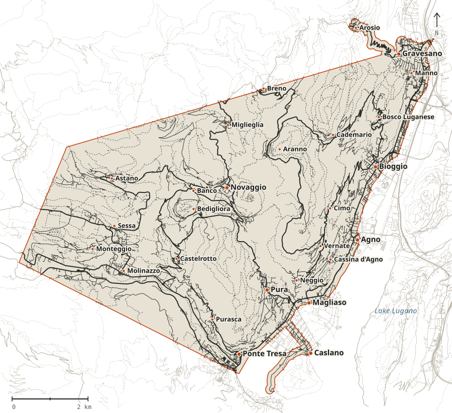
Where to start
Pick a spawn point in the game's menu once the level is loaded. Five good drives to begin with.
-
Pura 3.7 km
Magliaso to Pura, the Strada Cantonale
Where the project began, and the most detailed road on the map: markings, signs, street lamps and walls placed from the panoramas. Spawn at
spawn_magliaso. -
Gravesano 8.8 km
Along the lake
From Magliaso on the Strada Regina to Agno, then through Bioggio and Manno up to Gravesano.
-
Arosio 3.9 km
The Penudria
The Stradón da Rós, a narrow hairpin pass climbing from Gravesano up to Arosio.
-
Torrazza 2.7 km
Caslano and Via Torrazza
From Caslano station along the lake to the Torrazza, a narrow road under Monte Caslano. The cantonal road back to Ponte Tresa ends at the border bridge.
-
Sentieri 337 km
Off the asphalt
Every forest road, mule track and stairway has a solid surface. Gravel, dirt, setts and cobblestones each change the grip.
In the game
All screenshots are taken in BeamNG.drive 0.39 with the released levels (v2.6, v2.7 and v2.8), no HUD, the game's own light and sky. Nothing here is a render or a mock-up.

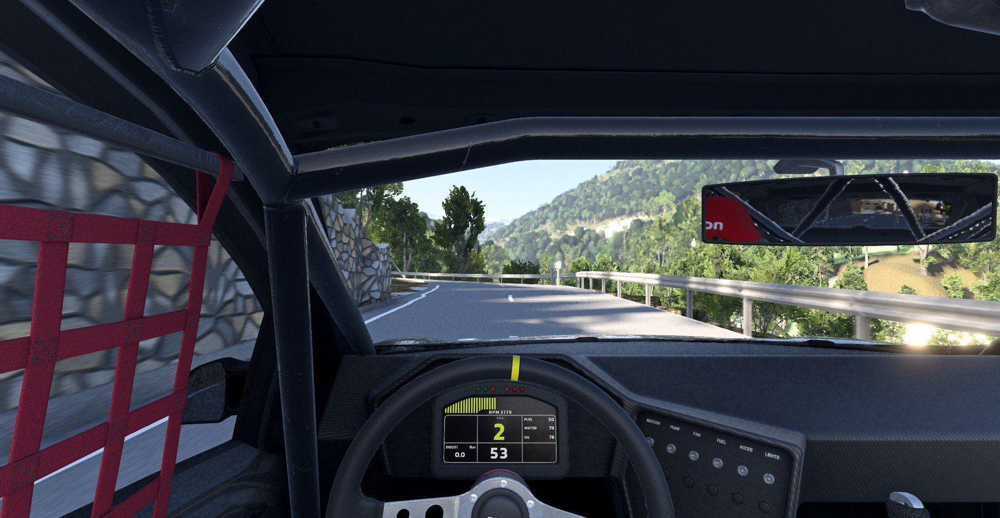
v2.8: from the driver's seat on the cantonal road
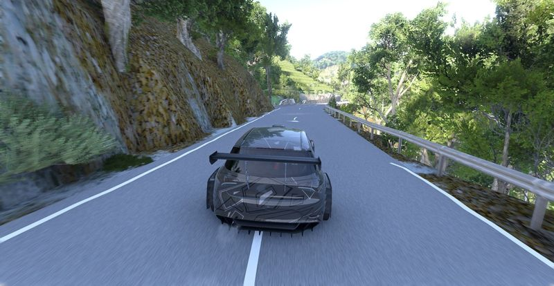
v2.8: the cantonal road near Pura
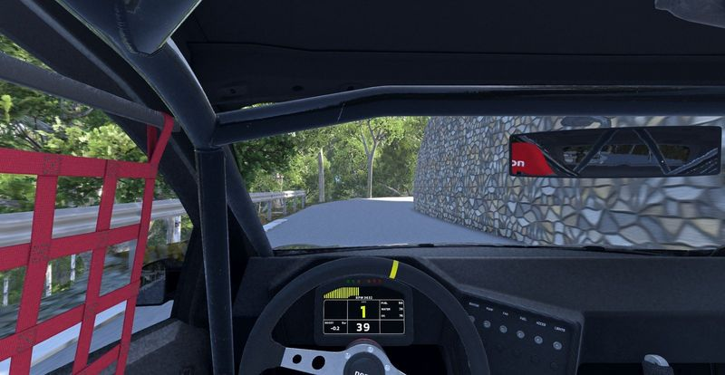
v2.8: Miglieglia to Novaggio, driver's view
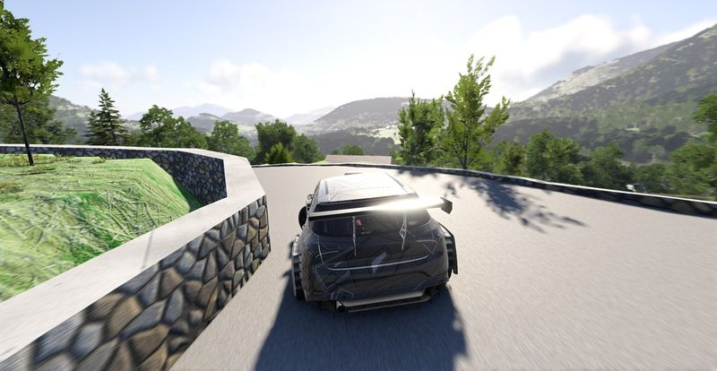
v2.8: the hairpin above Breno
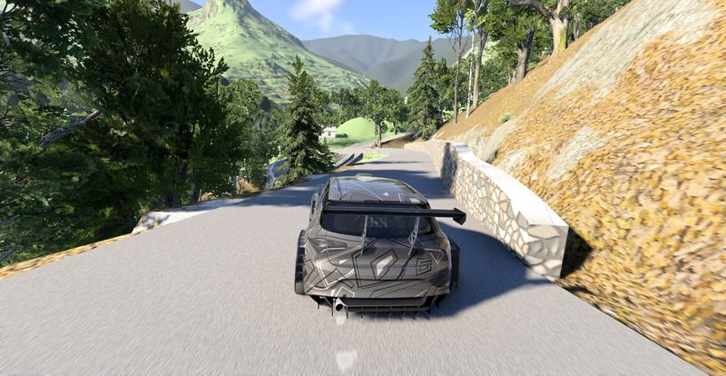
v2.8: Mugena to Vezio
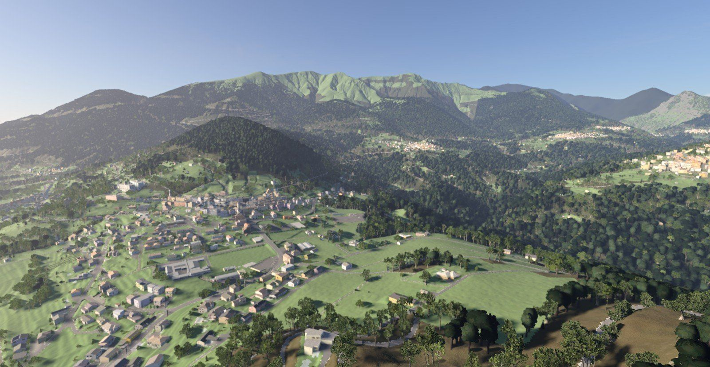
v2.8: Novaggio, Miglieglia and the Alto Malcantone
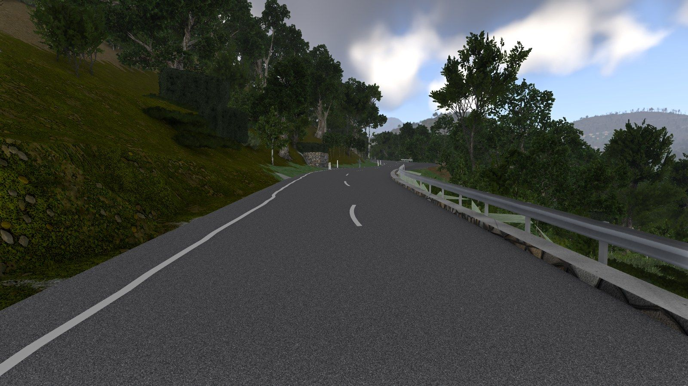
The cantonal road towards Pura
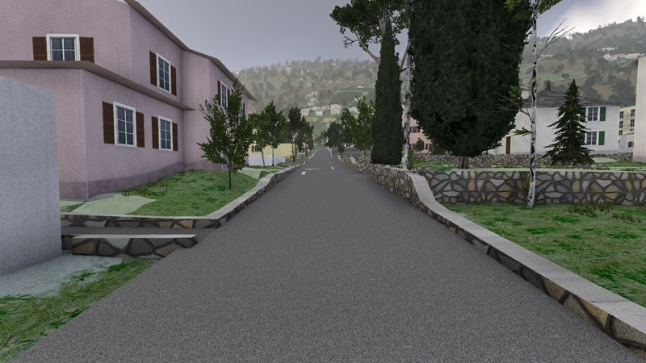
Agno, a street in the old town
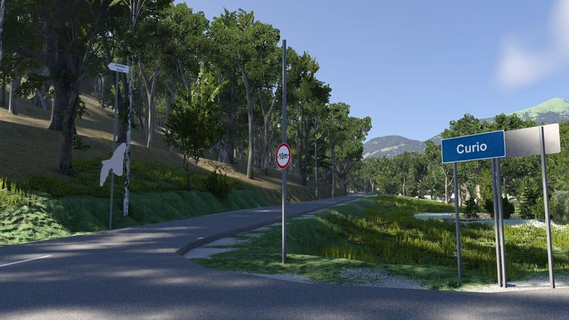
The Curio sign at the top of the cantonal road
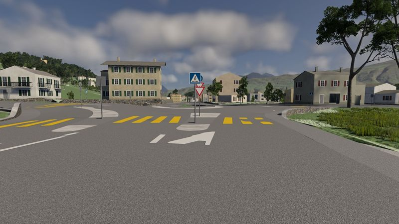
Swiss yellow crossings, redrawn from the 10 cm aerial photo
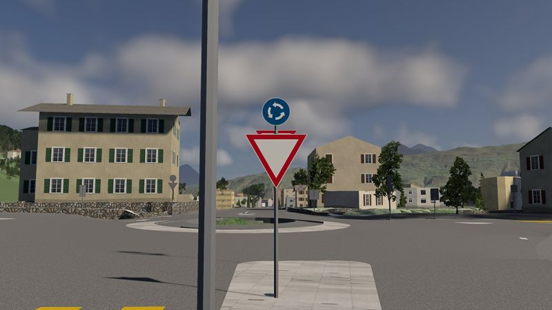
Roundabout entry
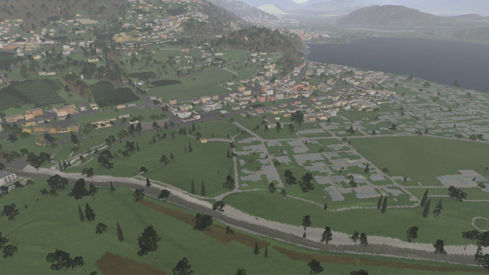
Magliaso and Lake Lugano from the air
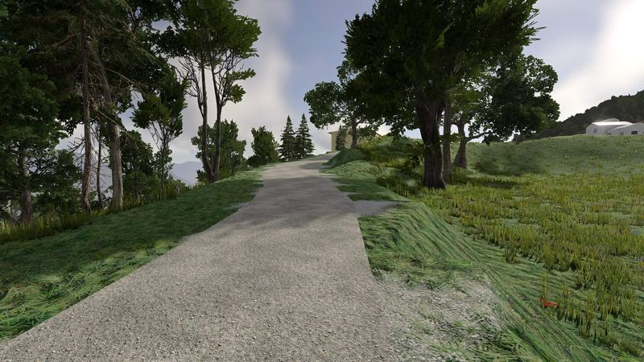
Dirt track above Arosio
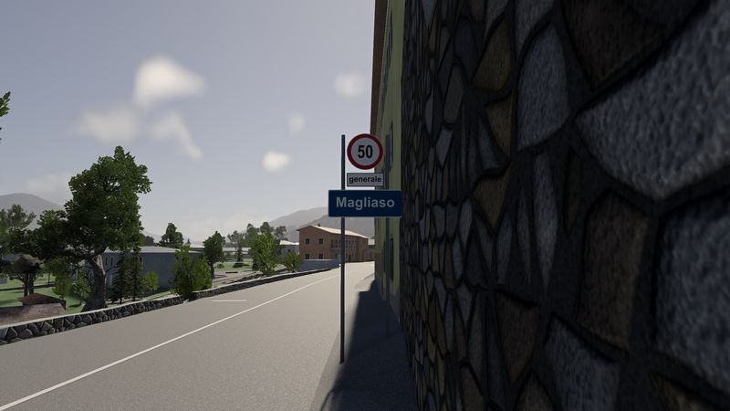
Entering Magliaso
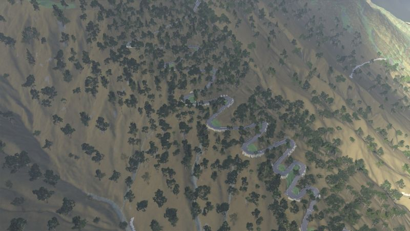
The Penudria from above
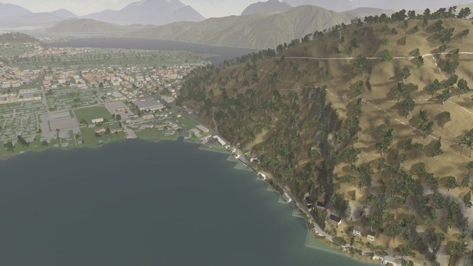
Caslano and Via Torrazza
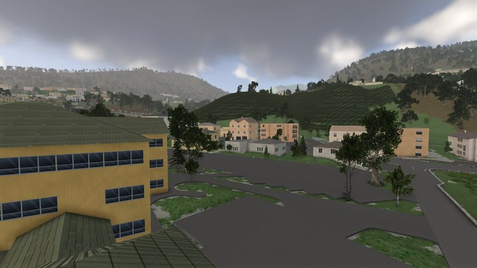
Magliaso, towards the old town
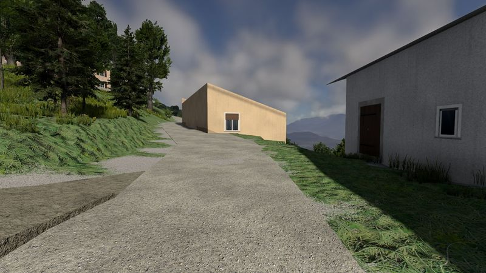
Gravel at Cademario
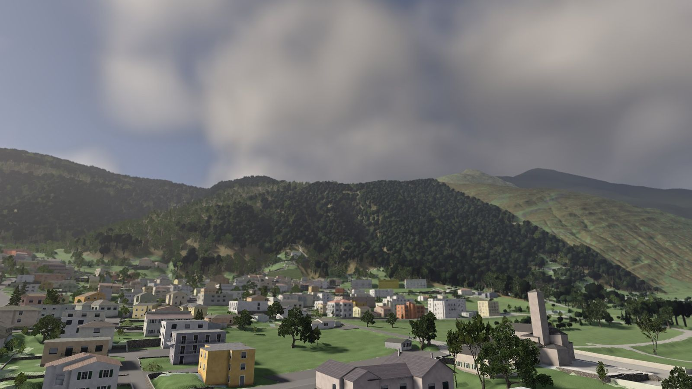
Gravesano and the slopes of the pass
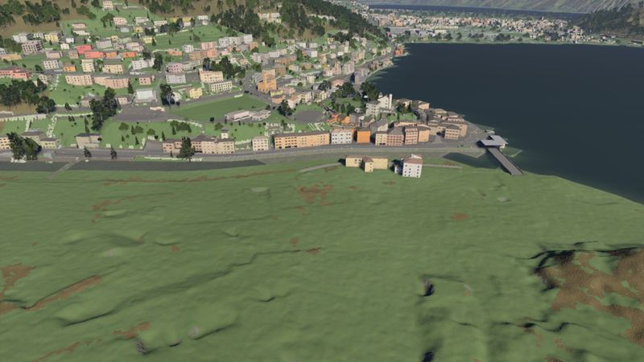
Ponte Tresa from the Italian side
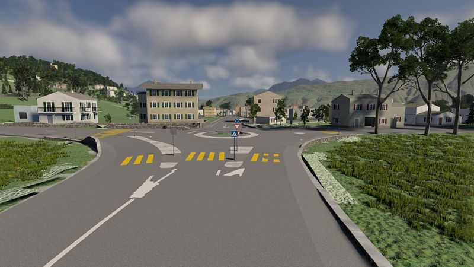
Roundabout markingsHow it's made
There is no hand-edited level file. A Python pipeline rebuilds the whole map from open data every time, and if its checks fail, no release goes out.
Google Street View panoramas were used as a reference only: to measure a façade colour, see whether a guardrail is there, or tell what a wall is made of. No Street View image is in the map or the repository.
Terrain comes from swisstopo's LiDAR model at 1.5 m. Roads are carved 10 cm into it, so the ground never pokes through the asphalt.
Roads are re-centred on the surveyed carriageway, and one least-squares fit gives the whole network a smooth height profile. Junctions meet, and gradients are the real ones.
Buildings are swissBUILDINGS3D and the cadastral survey, dressed with drawn façades, shutters, doors and shop windows. The building register sets their age and number of floors.
Trees are measured one by one in the surface model, and kept out of the road clearance.
Markings are detected in the 10 cm aerial photo and redrawn to the Swiss standard. Signs follow what OpenStreetMap maps and the rules it records.
Checks run over the whole map: a simulated car drives every road in both directions and every trail, 670 km in all, and reports every step, lift-off and hard hit.
What isn't there yet
Each limit has an open issue with the places and the possible fix.
| Under Windows with DirectX 12 the game needs about 12 GB of RAM at its peak (6.4 GB in the v2.8 test on native Linux). On a 16 GB PC with a browser open it can stall after loading: start the game with DirectX 11. | #31 |
| On the Italian side there is only terrain: no roads or buildings past the Ponte Tresa bridge. | #18 |
| Tunnels are not built. Roads and the railway stop at the portals. | #19 |
| Windows, balconies and doors are plausible, not copied house by house. | #11 |
| Direction, parking and warning signs that nobody mapped in OpenStreetMap are missing. | #21 |
| Within about 12 m the far trees look almost black. No road comes that close. | #30 |
Install
- Download
magliaso_pura_v2.8.zipfrom the latest release. - Copy the zip, still zipped, to
Documents/BeamNG.drive/current/mods/. - Remove any older
magliaso_pura_v2.x.zipfrom the same folder. All versions share one level name and conflict. - In the game choose Freeroam, then Malcantone - Magliaso, Pura e dintorni.
What you need
BeamNG.drive 0.39 and 16 GB of RAM. On an RTX 4070 v2.8 loaded in about 130 s with 6.4 GB of memory at its peak; v2.7 ran at 74 to 131 fps at the test views at 2560 × 1440.
The first load takes about two and a half minutes while the game converts shapes and trees. After that, about 70 seconds.
Download v2.8 zip, 514 MB